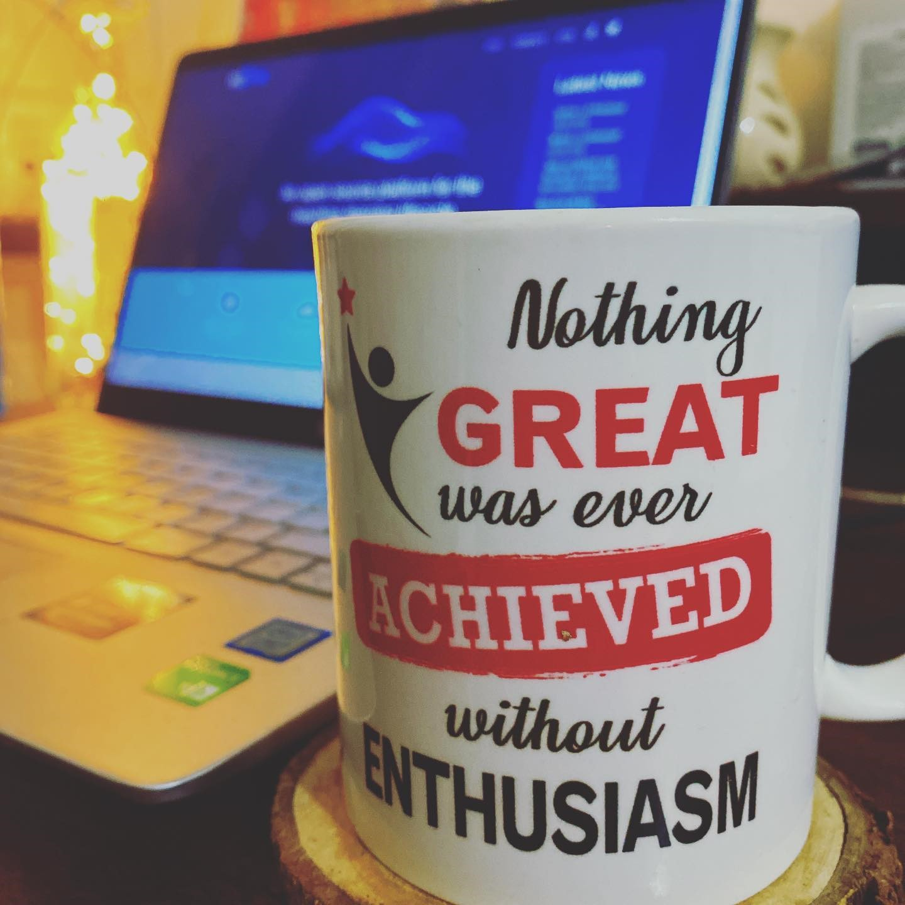

Intro

Hi, Kamesh here,
I ❤️ Technology, I'm Self-motivated, Collaborative and Passionate CS Engineer.
• I am a B.Tech Graduate with Specialization in Computer Science and available for full time jobs.
• Looking for Fresher job opportunities where I can explore my knowledge and bring insights and produce optimal solutions to the real world problems.
• Accomplished several courses related to Data Science and Machine Learning and developing my skills by participating in various bootcamps and hackathon.
• There's nothing better than extracting insights and making better decisions with data.
• Key Skills: Python, SQL, Data Analysis & Interpretation, Data Science, Machine Learning, Data Visualization through Power BI & Tableau Software.
• Looking for job opportunities where I can explore my knowledge and bring insights and produce optimal solutions to the real world problems.
• I believe that "Constant Learning, Experimenting & Determination" are the main keys to be successful.
--
--
My Portfolio : https://Kamesh-Mishra.github.io/
My Github Profile: https://github.com/Kamesh-Mishra